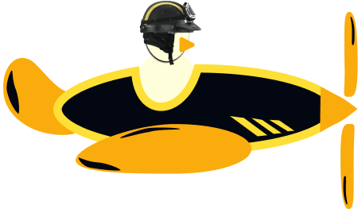

Aviator
Aviator
Como funciona o jogo Aviãozinho Fatekinho?
Ele é o famoso Jogo do Aviãozinho , no qual você ganha dinheiro dependendo do tempo que o avião permanece na tela.
O funcionamento do Jogo do Aviãozinho no Fatekinho é muito simples:
- Você começa uma rodada colocando um valor de aposta;
- Um avião decola e fica um tempo sobrevoando na tela;
- Enquanto o avião está subindo, um multiplicador vai sendo mostrado, aumentando consecutivamente o valor da sua aposta;
- Quando o avião sai da tela, o jogo termina.
Assim, neste jogo, há algumas possibilidades:
- Você retira sua aposta (faz cash out) enquanto o avião ainda está na tela. Os seus ganhos serão referentes à multiplicação do valor apostado pelo multiplicador que estava na tela no momento do cash out (por exemplo, 1x; 2x; 3x etc.);
- Você não retira sua aposta e o avião voa para longe , então, você perde o valor apostador naquela rodada.
Como tem regras simples e é muito dinâmico, o Jogo do Aviãozinho permite ganhos rápidos e altos. Por isso, faz tanto sucesso com os apostadores.
São vários os recursos disponíveis no jogo do Aviãozinho online no Fatekinho , como a possibilidade de colocar duas apostas simultâneas e de visualizar as partidas anteriores.
Como ganhar no jogo do Aviãozinho?
O segredo para ganhar no jogo do Aviãozinho é fazer o cash out antes que o avião decole e saia da tela. Mas, claro, isso garantindo o maior multiplicador possível, para conseguir um bom lucro.

Embora as regras do jogo do avião sejam fáceis, não se engane: O jogo do aviãozinho é bastante desafiador e muito emocionante. O que explica seu sucesso nos cassinos virtuais.
Para ficar mais simples, vamos dar um exemplo:
- Você inicia a partida com uma aposta mínima de R$ 1;
- O avião começa a decolar;
- Quando atinge o multiplicador de 2x, você faz o cash out;
- O avião sobrevoa até o multiplicador de 5x e depois sai da tela;
- Nessa rodada, você ganhou R$ 2.
Mas e se tivesse aguardado e não feito o cash out? Se o avião tivesse, por exemplo, saído da tela no multiplicador de 1x e você não tivesse retirado sua aposta, teria perdido a rodada.